Arquiteta e Urbanista graduada pela Faculdade Anhanguera e Técnica em Design de Interiores, apaixonada por criar ambientes que unem estética, funcionalidade e bem-estar. Minha formação complementar em interiores me permite explorar materiais, cores, texturas e iluminação de forma estratégica, resultando em espaços harmônicos e confortáveis visualmente. Tenho grande afinidade com o acompanhamento de obras, valorizando a vivência prática no canteiro, o diálogo com equipes e a garantia de que cada etapa seja executada com qualidade e precisão marcantes.
Projetos exclusivos e personalizados: Transformamos ideias em ambientes
funcionais
que refletem
seu estilo de vida.
Consultoria em Decoração: Auxiliamos na escolha de mobiliário,
iluminação e
objetos
decorativos
para criar ambientes personalizados e únicos.
Obra: A execução e o gerenciamento de obra garantem que cada etapa seja
realizada
conforme o
projeto, dentro do prazo e do orçamento, além de coordenar equipes, materiais e
fornecedores.
Ambiente integrado de estar, jantar e cozinha,
com planta livre e forte sensação de amplitude
espacial. O projeto valoriza a arquitetura
contemporânea, com linguagem clean e
minimalista, marcada pelo uso de marcenaria sob
medida em ripado de madeira, que confere ritmo,
textura e aconchego ao espaço.
A paleta neutra (tons de bege, cinza e madeira)
reforça a sofisticação atemporal, enquanto o pé
direito visualmente contínuo e a iluminação
embutida no forro de gesso garantem
uniformidade e conforto luminotécnico. As
grandes aberturas com cortinas translúcidas
promovem iluminação natural difusa e integração
com o exterior.
O layout privilegia funcionalidade e fluidez, com
mobiliário de linhas retas, volumetria equilibrada e
elementos de biofilia, como o jardim vertical, que
acrescenta frescor e bem-estar ao ambiente.
O tom verde da marcenaria e a bancada em
granilite imprime personalidade. Resultando em
um ambiente equilibrado, funcional e visualmente
marcante, onde cada material valoriza o outro.
O destaque deste projeto foi a cozinha com
linguagem contemporânea e composição
minimalista, marcada pela marcenaria linear em
madeira, que cria unidade visual e sensação de
continuidade. A ilha central em terrazzo atua
como elemento protagonista, agregando
materialidade e personalidade ao espaço.
A paleta neutra combinada aos tons naturais
reforça a estética sofisticada e acolhedora,
enquanto o forro liso com iluminação pontual
embutida valoriza a pureza das linhas. O layout
privilegia funcionalidade, ergonomia e circulação
fluida, integrando a área de refeições de forma
harmoniosa e equilibrada
Living integrado com estética contemporânea,
caracterizado por linhas puras, painel planejado e
composição equilibrada dos volumes. A paleta
neutra cria uma base atemporal, enquanto pontos
de cor no mobiliário acrescentam dinamismo ao
ambiente.
O forro com iluminação linear e embutida valoriza
a horizontalidade e amplia a percepção espacial,
complementado pela luz natural filtrada por
cortinas translúcidas. O layout favorece conforto,
setorização sutil e fluidez, resultando em um
espaço sofisticado e acolhedor
Estamos ansiosos para ouvir sobre o seu próximo projeto de design. Entre em contato e descubra como podemos transformar sua visão em realidade.